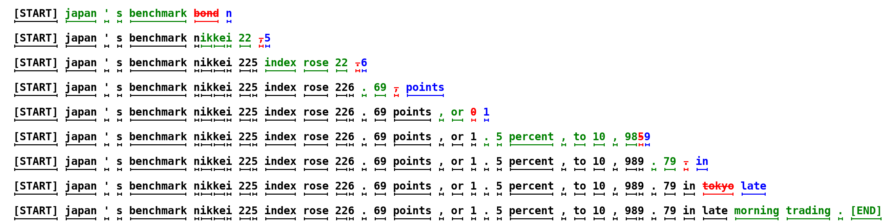

已有上下文
推测解码
大模型每生成一个 token，都要把几十亿参数从显存搬到计算单元——这一步的瓶颈不是算力，而是访存带宽。既然搬运一次权重的代价是固定的，能不能一次搬运多产出几个 token？推测解码用一个小模型先「猜」几个词，再让大模型一次性并行验证，在不改变输出分布的前提下把单次前向的产出从 1 个 token 提升到 3-6 个。
一图看懂
推测解码就像口述录音：你（草稿模型）先快速口述一段话，秘书（目标大模型）一次性扫完整段并逐词检查——对的就保留，第一个错的词改正，后面全丢掉重猜。秘书只在「验证」和「纠正」时花时间，但一次能确认多个词，整体比逐字听写快得多。
- 草稿阶段小模型自回归生成 gamma 个候选词
- 已有上下文
- 候选词 t1 t2 t3 t4
- 草稿阶段 / 小模型自回归生成 gamma 个候选词
- 验证阶段大模型一次前向并行算出每个位置的概率
- 候选词 t1 t2 t3 t4
- 逐词检查接受或拒绝
- 验证阶段 / 大模型一次前向 / 并行算出每个位置的概率
- t1 t2 t3保留
- 逐词检查 / 接受或拒绝接受
从修正分布重采样 t4- 逐词检查 / 接受或拒绝第一个错误
- 继续下一轮
- t1 t2 t3 / 保留
- 从修正分布 / 重采样 t4
为什么自回归解码慢：访存瓶颈
大模型推理生成阶段（Decode）是访存受限（memory-bound）的。每生成一个 token，都要把整个模型权重从 HBM（高带宽显存）搬到计算单元，做一次前向计算，但只产出一个 token。
$$\text{算术强度} = \frac{\text{计算量（FLOP）}}{\text{访存量（Byte）}} \approx \frac{2 \times \text{参数量}}{2 \times \text{参数量} \times \text{bytes/参数}} \approx \frac{1}{\text{bytes/参数}}$$
以 FP16 为例，算术强度约 $1/2 = 0.5$ FLOP/Byte，远低于现代 GPU 的峰值算术强度（A100 约 100+ FLOP/Byte）。这意味着算力大量闲置——大部分时间花在搬权重上，计算单元在空转。
一句话直觉
逐 token 解码就像每次只搬一趟砖却只砌一块——搬运成本固定，产出却只有一个。推测解码的本质是一趟搬运多砌几块砖，把固定的访存代价分摊到更多 token 上。
推测解码的核心机制
推测解码由 Leviathan et al.（arXiv:2211.17192）和 Chen et al.（arXiv:2302.01318）在 2022-2023 年独立提出，核心是「Draft-then-Verify」两阶段循环。
两阶段循环
每一轮包含两个阶段：
草稿阶段（Draft）
用一个更小更快的草稿模型 $q$，基于当前上下文自回归地生成 $\gamma$ 个候选 token，同时记录每个 token 的概率 $q(t_i)$。
验证阶段（Verify）
把候选 token 拼接到上下文后面，让目标大模型 $p$ 做一次前向，并行算出每个位置的概率 $p(t_i)$。然后逐词检查接受或拒绝。
这个「先猜后验」的过程，正是推测解码奠基论文里那张原图要表达的核心。下面这张图来自 Leviathan et al.（Google, 2022），它把一次完整循环里草稿模型和目标模型的时序画在了一起。

逐块读这张图，注意它刻意用两条时间线来画。第一，图的上方通常是草稿模型（draft model）的轨迹：它在现有上下文之后，一步一个 token 地快速生成候选——注意这一步是串行的（每生成一个 token 都要基于前一个），所以草稿模型必须足够小、足够快，否则这一步本身就成瓶颈。第二，图的下方是目标模型（target model）的验证：草稿把所有候选一次性交给目标模型后，目标模型做一次并行前向，同时算出每个候选位置的概率——图中用并排的分布条来表示。第三，注意两类模型的耗时比例：草稿阶段画了 $\gamma$ 个小方块（$\gamma$ 次小前向），验证阶段只有 1 个大方块（1 次大前向）。这就是加速的全部秘密——用 $\gamma$ 次「便宜的前向」换 1 次「昂贵的前向」，只要前者总耗时小于后者，就赚到了。
这张图还点出一个容易被忽略的细节：目标模型验证的是「整段候选」，而不是「一个候选」。这意味着验证阶段算出来的概率不仅决定「接受谁」，还决定了「如果拒绝，从哪个修正分布重采样」——图里被拒绝位置的那条分布，就是修正拒绝采样的输入。把「并行验证多个 token」和「用修正分布保住分布不变」这两个机制放在一起看，就能理解推测解码为什么不是「近似加速」，而是数学上严格等价的加速：它加速的是「跑完 γ 步的时间」，而不是「输出」本身。
无损验证：修正拒绝采样
推测解码的精妙之处在于验证阶段的修正拒绝采样——它能数学保证输出分布和直接用目标模型逐 token 生成完全一致：
$$\text{接受概率} = \min\!\left(1, \frac{p(t_i)}{q(t_i)}\right)$$
逐词检查的逻辑是：
- 如果 $p(t_i) \geq q(t_i)$：大模型觉得这个 token 至少和小模型一样可能，接受。
- 如果 $p(t_i) < q(t_i)$：以概率 $p(t_i)/q(t_i)$ 接受；若拒绝，则从修正分布 $\text{norm}(\max(0, p - q))$ 中重采样一个 token，丢弃其后所有候选。
这个数学技巧保证最终输出的概率分布与 $p$ 模型单独逐 token 生成完全等价——不损失任何质量。加速来自「一次前向验证多个 token」的并行性，而非牺牲精度。
sequenceDiagram
participant D as 草稿模型 q
participant P as 目标模型 p
participant V as 验证器
D->>V: 自回归生成 t1..tγ（带 q 概率）
V->>P: 候选拼回上下文，一次前向
P-->>V: 并行给出每个位置 p(ti)
loop 逐位置 i = 1..γ
V->>V: 接受概率 = min(1, p(ti)/q(ti))
alt p(ti) >= q(ti)
V->>V: 接受 ti
else p(ti) < q(ti)
V->>V: 以 p/q 概率接受，否则修正分布重采样
end
end
V-->>D: 返回最长接受前缀 + 一个修正 token
把修正拒绝采样写成几行代码会更直观（示意，真实实现要结合树形候选）：
import random
def speculative_accept(p_prob, q_prob, draft_token, sample_from_p):
"""单个位置的修正拒绝采样。
p_prob: 目标模型给 draft_token 的概率
q_prob: 草稿模型给 draft_token 的概率
"""
if p_prob >= q_prob:
return draft_token, True # 必接受
if random.random() < (p_prob / q_prob):
return draft_token, True # 按概率接受
# 拒绝：从修正分布 norm(max(0, p - q)) 重采样一个 token
return sample_from_p(), False
新手最容易搞错
不少新手第一次听说「用草稿模型猜、大模型验」时，直觉反应是「那输出质量肯定打了折扣」。恰恰相反——推测解码在数学上保证输出分布和不用推测解码时完全一致（这就是修正拒绝采样的作用），它不是「近似加速」，而是「精确加速」。真正要担心的不是质量，而是另一个方向：如果你没有实现修正拒绝采样，只是粗暴地「草稿说了算、大模型只检查」，那才会破坏分布。工程上另一个常见误解是把「草稿模型」当「蒸馏产物」——草稿模型不需要和目标模型输出完全一致，它只需要「大概率猜对」，猜错了反正会被拒绝重采样。理解了这两点，读任何推测解码实现代码时就不会被「q(t)、p(t)、min(1, p/q)」这些符号吓住。
加速比由什么决定
每轮的期望接受 token 数为 $\alpha \cdot \gamma$（$\alpha$ 是平均接受率），加速比近似为：
$$\text{加速比} \approx \frac{\alpha \cdot \gamma + 1}{\text{草稿开销} + \text{验证开销}}$$
两个因素决定最终能快多少：
- 接受率 $\alpha$：草稿模型和目标模型有多「像」。越像，猜对的概率越高，$\alpha$ 越大。
- 草稿开销：草稿模型自身前向的耗时。越轻量，开销越小，但可能太弱导致 $\alpha$ 低。
这是推测解码的核心权衡：草稿模型太弱则接受率低，太强则自身成本抵消收益。
stateDiagram-v2
[*] --> Draft: 草稿模型生成候选
Draft --> Verify: 目标模型一次前向
Verify --> Accept: p >= q 或采样通过
Verify --> Reject: 采样未通过
Accept --> Next: 保留，继续下一位置
Reject --> Resample: 从修正分布重采样
Resample --> [*]: 输出修正 token，终止本轮
Next --> Verify: 还有候选
Next --> [*]: 候选用尽
草稿模型路线
最初的推测解码使用一个独立的小模型作为草稿。典型配对如用 7B 模型给 70B 模型打草稿——来自同一模型家族，分布更接近，接受率高。
| 维度 | Leviathan et al.（Google） | Chen et al.（DeepMind） |
|---|---|---|
| 论文 | Fast Inference from Transformers via Speculative Decoding | Accelerating LLM Decoding with Speculative Sampling |
| arXiv | 2211.17192 | 2302.01318 |
| 目标模型 | T5-XXL（11B） | Chinchilla（70B） |
| 实测加速 | 2-3 倍 | 2-2.5 倍 |
| 无损性 | 严格证明输出分布不变 | 严格证明输出分布不变 |
独立草稿模型的问题是匹配难：要找到和目标模型同家族、同训练数据的合适小模型。给最小的 7B 模型找草稿模型就很尴尬——没有更小的同家族模型可用。而且部署时要同时维护两个模型，增加系统复杂度。
草稿模型怎么选
选草稿模型的核心指标是与目标模型分布越接近，接受率越高。同家族小模型（如同系列的 7B 给 70B 打草稿）通常比跨家族小模型好；如果做不到同家族，退而求其次选训练数据重叠多的。另外，草稿模型不必和目标模型结构相同——它只要「猜得准」即可，因此常选更轻量、推理更快的架构。一个经验法则：草稿模型的单次前向开销应小于目标模型单次前向的 1/γ，否则草稿本身就成了瓶颈。
Medusa 与 EAGLE：无需独立草稿模型
为了解决独立草稿模型的痛点，Medusa 和 EAGLE 走了一条不同的路：不引入额外模型，而是在目标模型内部做草稿。
Medusa：多头并行预测
Medusa（arXiv:2401.10774）在目标模型的特征层上接多个轻量解码头，每个头预测不同未来位置的 token：
- 目标模型特征层second-to-top-layer
- LM Head预测 t+1
- 目标模型特征层 / second-to-top-layer
Medusa Head 1预测 t+2- 目标模型特征层 / second-to-top-layer
Medusa Head 2预测 t+3- 目标模型特征层 / second-to-top-layer
Medusa Head 3预测 t+4- 目标模型特征层 / second-to-top-layer
- 候选 token
- LM Head / 预测 t+1
候选 token- Medusa Head 1 / 预测 t+2
候选 token- Medusa Head 2 / 预测 t+3
候选 token- Medusa Head 3 / 预测 t+4
- 树形注意力组合成候选树
- 候选 token
- 候选 token
- 候选 token
- 候选 token
- 目标模型一次前向验证
- 树形注意力 / 组合成候选树
Medusa 不需要独立草稿模型，只需微调几个小 head（Medusa-1 冻结主干只训 head，Medusa-2 连主干一起微调）。用树形注意力（tree attention）把多个头给的候选组合成一棵树，目标模型一次前向验证整棵树，保留最长合法前缀。实测加速 2.2-3.6 倍。
但 Medusa 的短板是准确率有限——每个头独立预测，没有自回归的依赖关系，接受率约 0.6。
EAGLE：特征级自回归 + 树形验证
EAGLE（arXiv:2401.15077）发现两个关键洞察，把推测解码推向了新的高度：
洞察一：特征级自回归更简单
直接预测下一个 token 很难（离散且不确定），但在特征层（倒数第二层隐状态）做自回归更规律，再用目标模型的 LM Head 转成 token。
洞察二：引入「下一步」消除不确定性
把提前一步的 token 输入草稿模型，就能消除特征预测的不确定性，把接受率从约 0.6 提升到约 0.8。
EAGLE 的草稿模型在特征空间自回归地生成一条或多条候选路径，用树形注意力让目标模型一次前向验证。在 LLaMA2-Chat 70B 上取得 2.7-3.5 倍加速，比 Medusa 快约 1.6 倍，比 Lookahead 快约 2 倍。
EAGLE-2：动态草稿树
EAGLE（第一版）用的是固定形状的草稿树——不管上下文难易，树的结构都一样。EAGLE-2（arXiv:2406.16858）发现接受率是上下文相关的：
| 场景 | EAGLE（静态树） | EAGLE-2（动态树） |
|---|---|---|
| 下一个词很确定（如「1+1=」后面） | 仍生成多个分支候选 | 只生成 1 个高置信候选，省验证开销 |
| 下一个词不确定（如「1+」后面） | 固定分支数 | 生成多个分支候选，提高命中 |
| 加速比 | 2.7-3.5 倍 | 3.05-4.26 倍（比 EAGLE-1 快 20-40%） |
EAGLE-2 利用草稿模型的置信度分数近似接受率这一特性，动态调整树的形状——高置信路径多展开，低置信路径少展开，让验证开销花在刀刃上。
展开：推测解码方法演进全景
| 方法 | 草稿来源 | 候选结构 | 典型加速比 |
|---|---|---|---|
| 原始推测解码 | 独立小模型 | 链式 | 2-3 倍 |
| SpecInfer | 多个小模型 | 树式 | 1.5-3.5 倍 |
| Medusa | 多头预测 | 树式（固定） | 2.2-3.6 倍 |
| Lookahead | N-gram + Jacobi | 链式 | 1.3-1.9 倍 |
| EAGLE | 特征级自回归 | 树式（固定） | 2.7-3.5 倍 |
| EAGLE-2 | 特征级 + 动态树 | 树式（动态） | 3.05-4.26 倍 |
后续 EAGLE-3 等进一步优化，加速比可达 3-6.5 倍。到 2024-2025，推测解码已成为 vLLM、TensorRT-LLM、SGLang 等主流推理引擎的标准内置能力。
推测解码方法族全景
把前面提到的所有方法放进一张图，能看清它们的演化脉络——从「外挂一个小模型」一路走到「模型自己训练出草稿头」：
核心主题推测解码
01独立草稿模型
- Leviathan 2022
- Chen 2023
- SpecInfer
02多头预测
- Medusa
03特征级自回归
- EAGLE
- EAGLE-2 动态树
04自推测
- MTP 头
- DeepSeek-V3
自推测与工程实践
自推测解码
「自推测」（self-speculative decoding）是指用同一个模型的不同配置来生成草稿和验证——比如跳层生成草稿、全层验证。DeepSeek-V3 发布的多 token 预测头（MTP）让自推测变得更自然：模型训练时就带了一个能一次预测多个未来 token 的头，推理时直接用它做草稿，无需额外训练草稿模型。这使推测解码成为前沿开源模型部署的原生能力。
验证接受率：怎么判断效果
实际部署中，接受率受多个因素影响：
- 任务类型：代码、结构化输出等高确定性场景接受率高；开放域创作低。
- 草稿长度 $\gamma$：太短加速不够，太长尾部接受率下降、浪费草稿计算。通常取 4-8。
- 批处理大小：大 batch 下 GPU 算力已被充分利用，推测解码的边际收益下降——它主要在小 batch / 低延迟场景效果显著。
常见误区
推测解码不是在所有场景都更快。大 batch 服务场景下 GPU 算力已被多请求填满，额外的草稿计算反而是净开销。它最大的价值在单请求低延迟场景——交互式对话、代码补全等对首 token 延迟和逐 token 速度敏感的应用。
生产部署现状
到 2024-2025，推测解码已成为生产 LLM 服务的标准组件。vLLM、TensorRT-LLM、SGLang 都内置了支持，EAGLE 系列在 Spec-Bench 基准上长期排名第一。Google 在搜索的 AI 概览功能中也部署了推测解码。配合 推理引擎 的连续批处理和 PagedAttention，推测解码能把单请求延迟降低 2-4 倍，是压低单 token 成本的关键手段之一。
展开：EAGLE 风格特征级草稿的伪代码
EAGLE 的核心洞察是在特征空间（倒数第二层隐状态）做自回归，比直接在离散 token 上预测更规律。下面是一段概念伪代码（非生产实现）：
class EAGLEDrafter:
"""EAGLE 风格特征级草稿（概念示意）
不在 token 空间预测，而在目标模型的隐状态空间自回归，
再用目标模型的 LM Head 把隐状态转成 token。
"""
def draft(self, feat_prev, token_prev, gamma):
candidates = []
h = self.draft_model(feat_prev, token_prev) # 一步特征预测
for _ in range(gamma):
tok = self.lm_head(h) # 特征 -> token
candidates.append(tok)
h = self.draft_model(h, tok) # 自回归预测下一步特征
# 候选交给目标模型，用树形注意力一次前向验证整棵草稿树
return candidates之所以比 Medusa 接受率高（约 0.8 vs 0.6），关键在于引入了「提前一步的 token」作为输入——特征预测不再是孤立的，而是带着上下文条件，不确定性被大幅消除。代价是草稿模型需要先用目标模型的特征做一轮蒸馏训练。到 EAGLE-2 进一步用动态草稿树按置信度分配验证预算，加速比再上一个台阶。
接受率 0.7 时加速比推演：一笔具体的账
推测解码到底能快多少，不能靠感觉，要按公式推一遍。这里用一个具体算例演示「接受率、草稿长度、草稿开销」三者如何共同决定最终加速比。
假设草稿模型每次自回归生成 $\gamma = 4$ 个候选 token，平均接受率 $\alpha = 0.7$（即每个位置有 70% 概率被目标模型接受，这是 EAGLE 系列在真实模型上的典型水平）。那么一轮下来，期望接受 $\alpha \cdot \gamma = 2.8$ 个 token，加上第一个被拒绝后从修正分布重采样的 1 个 token，一轮平均产出约 3.8 个 token。一轮耗时 = 草稿阶段（$\gamma$ 次小模型前向）+ 验证阶段（1 次大模型前向）。
给这些项赋上量级：设大模型一次前向耗时 $T$，草稿模型体积是大模型的 1/5，单次前向约 $T/5$。那么一轮总耗时 $= 4 \times (T/5) + T = 1.8T$，产出了 3.8 个 token，等效每 token 耗时 $1.8T / 3.8 \approx 0.47T$——相比朴素解码的每 token $T$，加速约 2.1 倍。如果接受率提高到 0.8，产出变成 $3.2 + 1 = 4.2$ 个 token，加速比约 $1.8T/4.2 \approx 2.3$ 倍。如果草稿模型太弱、接受率只有 0.4，产出仅 $1.6 + 1 = 2.6$ 个，加速比掉到约 1.4 倍。
这个算例揭示了三个关键规律。第一，接受率对加速比的影响是指数级的（对 $\gamma$ 个位置的联合接受），从 0.4 到 0.8，加速比几乎翻倍——所以「草稿模型和目标模型有多像」是推测解码最重要的单一变量。第二，草稿长度 $\gamma$ 不是越大越好：$\gamma$ 从 4 提到 8，草稿耗时翻倍（$8 \times T/5 = 1.6T$），但尾部候选的接受率通常衰减（离当前 token 越远越难猜），实际产出可能只从 3.8 涨到 4.5 左右，加速比反而可能下降。这就是为什么实践里 $\gamma$ 常取 4-8，而不是无脑拉长。第三，草稿模型的开销占比决定了收益上限：如果草稿模型前向耗时接近 $T/2$，那一轮耗时 $4 \times T/2 + T = 3T$，产出 3.8 个 token 后加速比只剩 1.26 倍——草稿太「贵」，推测解码就不划算了。
把这笔账反过来用，还能得到一个工程判断：先测草稿模型的单次前向耗时，再决定要不要上推测解码。如果草稿前向已经超过目标模型的 1/4，收益空间就很小；如果只有 1/10 甚至更低（典型的小草稿模型），哪怕接受率只有 0.5，加速比也能到 1.5-2 倍，值得投入。上线前用你自己的模型和流量把这套公式实际跑一遍，比读任何 benchmark 都可靠。
推测解码的失败模式与适配判定
推测解码不是「开了就快」，它有几种典型失败模式，工程上必须先识别再决定是否启用。
失败模式一：大 batch 下收益归零甚至为负。这是最常被误解的一点。推测解码省的是「前向次数」——它假设 GPU 算力闲置、前向是瓶颈。但当连续批处理把 batch 撑大后，GPU 算力已被多个请求填满，此时草稿模型的额外计算不再是「免费午餐」，而是实打实的净开销。所以在高并发的生产服务里，推测解码通常只在「单请求、低并发」的路径上启用（如交互式补全、Agent 的单轮生成），或者只对少量高优先级请求开。要判断你的场景是否合适，直接看 GPU 利用率：利用率已经 80% 以上，推测解码大概率帮倒忙；利用率 30% 以下，才是它的主场。
失败模式二：草稿与目标分布偏差大，接受率过低。上一节算过，接受率 0.4 时加速比只剩 1.4 倍，而部署成本（双模型维护、草稿训练、推理栈配置）却一点不少。接受率低通常是因为草稿模型不是目标模型的同族模型，或训练数据分布不同。上线前先在代表性流量上实测接受率，低于 0.5 就要慎重——这时候优化草稿模型（用目标模型的特征蒸馏）比继续调参数更值。
失败模式三：目标模型本身已经很快。如果目标模型是小模型（7B 及以下）或已量化到 INT4，单次前向本来就只有几毫秒，草稿模型的相对开销变大、可省的绝对时间变小，推测解码的收益被稀释。这也是为什么推测解码在 70B 级大模型上效果最好——权重越大，单次前向越慢，一次并行验证多个 token 省下的时间越可观。
适配判定可以归纳为三个问题：目标模型是否够大（70B 级）？服务是否低并发、延迟敏感（GPU 利用率低）？草稿接受率是否达标（≥0.5）？三个都满足，推测解码是明确的净收益；满足两个，值得用 profiler 实测对比；满足一个或更少，先优化别处。把这三个问题写进部署 checklist，能避免绝大多数「开了反而更慢」的事故。
与批处理、量化、多轮的组合：推测解码放哪一层
推测解码不是独立部署的，它要和推理引擎的批处理、权重量化、KV Cache 管理协同工作。放对了层，各收益相乘；放错了层，互相抵消。
与连续批处理的组合是最微妙的一层。连续批处理通过「把 batch 做大」摊薄访存，推测解码通过「减少前向次数」摊薄访存——两者的优化方向其实是同一个资源：HBM 带宽。如果 batch 已经大到让带宽成为瓶颈，推测解码省下的「前向次数」并没有转化成真实收益，因为省下的带宽立刻被更大的 batch 吃掉。反之，如果 batch 小（低并发、交互式场景），带宽大量闲置，推测解码的收益才「落袋」。所以引擎里的典型配置是：推测解码只对 batch 里的「高优先级、低并发」路径启用，或者与「受限 batch 大小」搭配——先限制并发保证算力有余量，再让推测解码吃掉这部分余量。
与权重量化的组合也有讲究。目标模型量化到 INT4 后，单次前向的访存量下降（权重小了），推测解码省下的「权重搬运」也相应变小——但草稿模型往往也是量化的，草稿开销同样下降。两者一升一降，加速比未必变化。真正要注意的是草稿模型和目标模型的量化位宽要匹配：如果目标模型 INT4、草稿模型 FP16，验证阶段要对齐精度；如果草稿模型量化过狠、接受率掉到 0.4 以下，推测解码的收益会先于量化收益消失。经验做法是：目标模型量化到 INT4 时，草稿模型至少保持 INT8 或直接复用目标模型的特征层（EAGLE 路线），避免双重精度损失。
多轮对话场景还有一个被低估的组合点：KV Cache 复用。推测解码的草稿阶段也要访问 KV Cache，如果草稿模型和目标模型共享同一份 KV（EAGLE/Medusa 路线），前一轮生成的 KV 可以跨轮复用，草稿阶段甚至不需要重新算历史——这让多轮对话里的推测解码成本进一步下降。反过来，如果草稿模型是独立的，它的 KV 也要维护一份，显存和带宽都是双份开销。这也是为什么工程上越来越倾向「在目标模型内部做草稿」而非外挂独立小模型。
最后是代码/结构化输出场景的天然适配。代码补全、JSON 生成、SQL 生成这类任务确定性高，草稿命中率天然高（接受率常能到 0.8+），推测解码的加速比最大。而开放域创作（写小说、头脑风暴）接受率低，收益有限。部署时可以对不同任务类型做分流：结构化任务启用推测解码，开放任务关掉——这比全局一刀切要经济得多。
要点速查
- 本质：小模型猜、大模型验，一次前向确认多个 token，把固定访存代价分摊到更多产出上。
- 无损保证：修正拒绝采样数学保证输出分布与目标模型逐 token 生成完全一致。
- 加速来源：不在算力而在访存——解码阶段算力闲置，推测解码用富余算力换更少的前向次数。
- 关键权衡：草稿模型太弱则接受率低，太强则自身开销大，需在两者间取平衡。
- 方法演进：独立小模型 → Medusa（多头）→ EAGLE（特征级 + 树形）→ EAGLE-2（动态树）→ 自推测（MTP 头）。
- 适用场景：小 batch / 低延迟场景效果最显著；大 batch 下收益递减。
参考文献与延伸阅读
- Fast Inference from Transformers via Speculative Decoding（Leviathan et al., 2023, ICML）— 推测解码奠基论文之一，Google，本页论文原图来源 · arXiv:2211.17192
- Accelerating Large Language Model Decoding with Speculative Sampling（Chen et al., 2023）— DeepMind 独立提出的等价方法 · arXiv:2302.01318
- Medusa: Simple LLM Inference Acceleration Framework with Multiple Decoding Heads（Cai et al., 2024）— 多头并行预测，无需独立草稿模型 · arXiv:2401.10774
- EAGLE: Speculative Sampling Requires Rethinking Feature Uncertainty（Li et al., 2024）— 特征级自回归 + 树形验证 · arXiv:2401.15077
- EAGLE-2: Faster Inference of Language Models with Dynamic Draft Trees（Li et al., 2024）— 上下文感知的动态草稿树 · arXiv:2406.16858
- EAGLE-3: Scaling Up Inference Acceleration of LLMs via Training-Time Test（Li et al., 2025）— 放弃特征预测、用多层特征融合，加速比最高 6.5 倍 · arXiv:2503.01840
- SpecInfer: Accelerating Generative LLM Serving with Tree-based Speculative Inference（Miao et al., 2024, ASPLOS）— 树形推测验证系统 · arXiv:2305.09781
- vLLM Speculative Decoding 文档 — 主流引擎中的推测解码配置 · vLLM 官方文档
接下来
推测解码是在解码层面加速，底层的解码策略（贪心、采样、Top-k 等）见 解码策略；服务化部署时它与连续批处理、PagedAttention 的配合见 推理引擎；压缩成本的全局视角见 量化、剪枝与模型压缩。
权威延伸资料
围绕“推测解码”继续深入
本章从模型压缩、KV Cache、推理引擎、投机解码和端侧部署几个角度回答同一个问题：怎样以更少显存和更低延迟提供可接受的能力。
阅读提示：先定义服务约束（质量、TTFT、吞吐、显存和成本），再选量化、批处理、缓存或硬件方案，避免只比较单一速度数字。
- GPTQ: Accurate Post-Training Quantization for Generative Pre-trained Transformers ↗
基于近似二阶信息的后训练量化代表作，解释 4-bit 权重量化的误差补偿。
- AWQ: Activation-aware Weight Quantization ↗
保护激活显著权重的量化方法，适合比较 GPTQ、AWQ 与不同推理后端。
- SmoothQuant: Accurate and Efficient Post-Training Quantization ↗
将量化难度从激活迁移到权重，为 W8A8 推理提供工程路径。
- vLLM Documentation ↗
连续批处理、PagedAttention、量化和 OpenAI-compatible server 的实践入口。
- FlexGen: High-Throughput Generative Inference of Large Language Models ↗
在 GPU、CPU 和磁盘之间进行 offload 的系统设计，适合理解端侧与低显存部署。
资料优先选用原始论文、官方文档、大学课程和公共机构材料；链接按 2026-08-10 检索，具体版本以来源页面为准。
篇章视角
围绕“推测解码”继续深入
发展脉络
效率优化从权重量化和 KV Cache，发展到 paged serving、推测解码、Prefill/Decode 分离和端到端成本工程。
机制抓手
把 TTFT、TPOT、吞吐、显存占用、并发和质量损失分开测量，避免用单一 tokens/s 掩盖服务瓶颈。
工程权衡
压缩、批处理和 offload 会在精度、尾延迟、带宽和实现复杂度之间重新分配成本。
前沿观察
FP8/FP4、异构缓存、连续批处理和 disaggregated serving 正在成为规模化部署的基础设施。
实践检查能根据 SLA 和 GPU 预算选择量化、并行和缓存方案，并给出可回归的基准表。
学习目标
能推导草稿-验证-接受过程为何保持目标分布，并判断接受率、草稿成本和批量验证的盈亏点。
先修关系
先修 Prefill/Decode、KV Cache 和 GPU 带宽；任何结论都要附吞吐、尾延迟和显存测量。
最小实验
用小离散词表实现 target/draft 推测采样，运行至少 50000 个 token；比较目标直接采样的频率分布，并扫描草稿长度 1/4/8 和不同匹配度。
验收标准
推测与目标采样的总变差距离小于 0.02；报告接受率、target 调用、墙钟加速和低接受率反例，并定义自动关闭阈值。